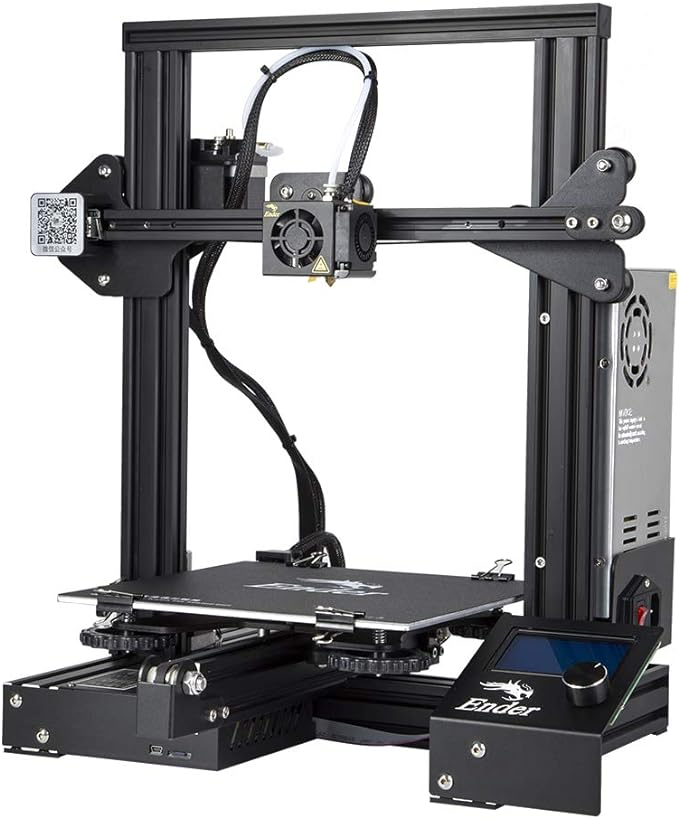
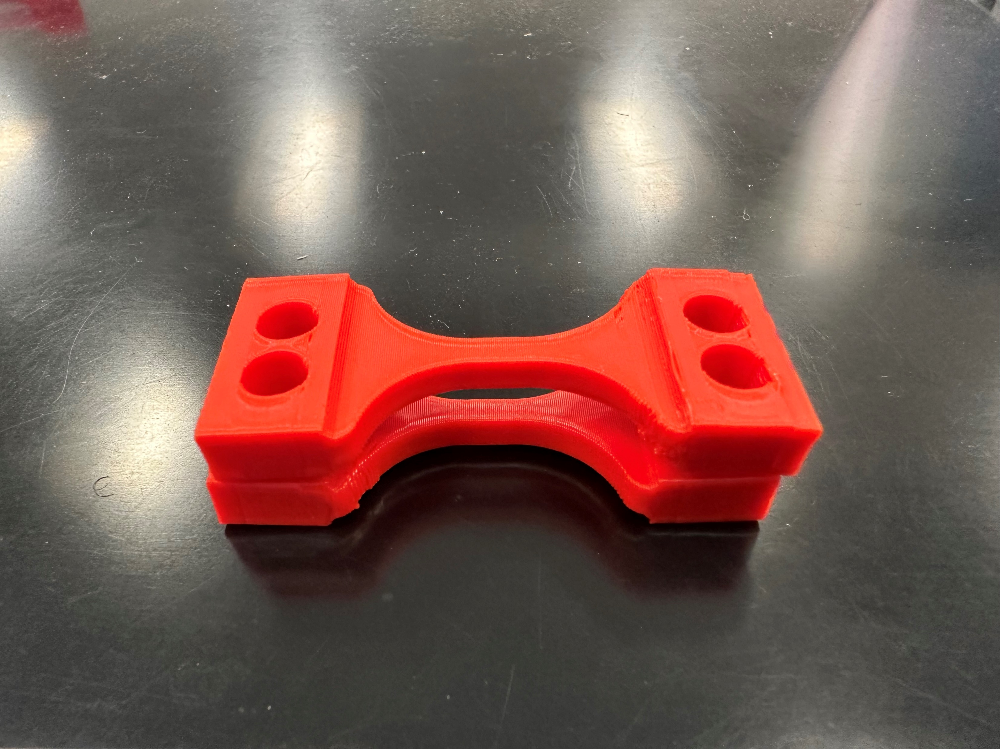
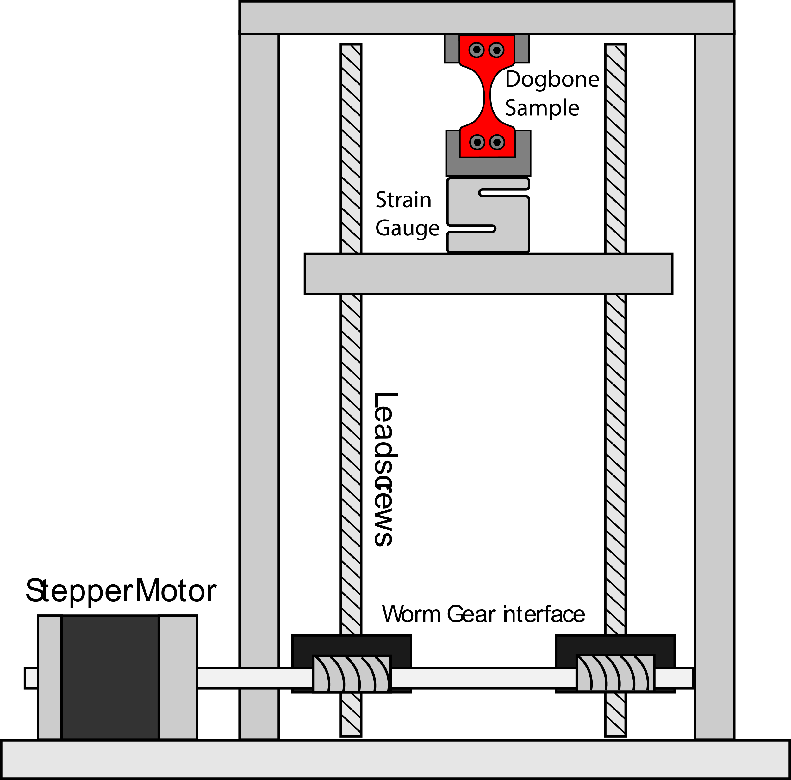
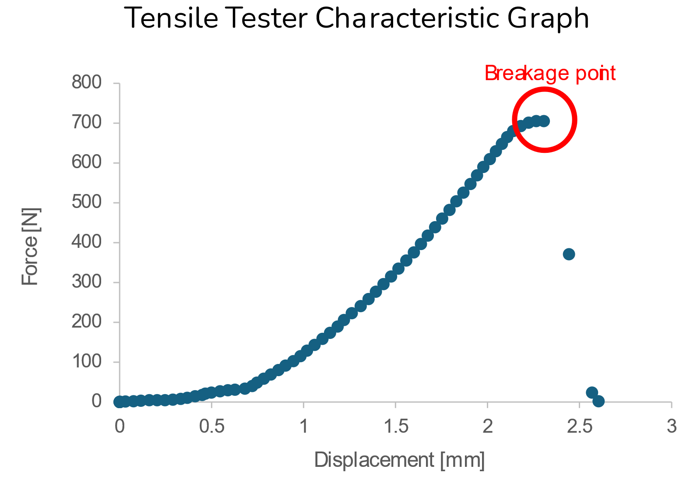
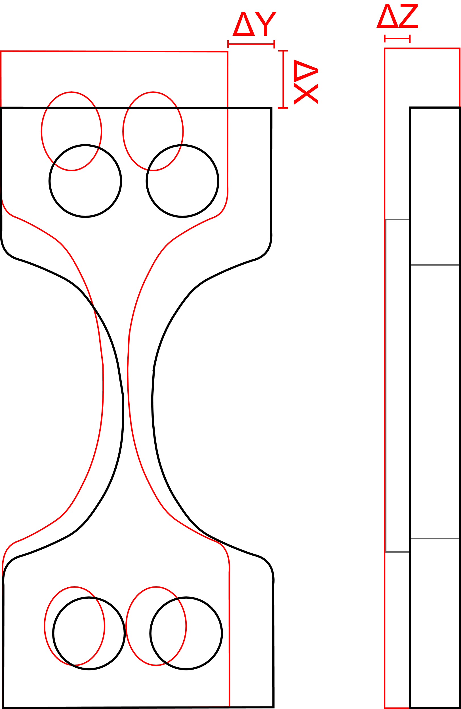
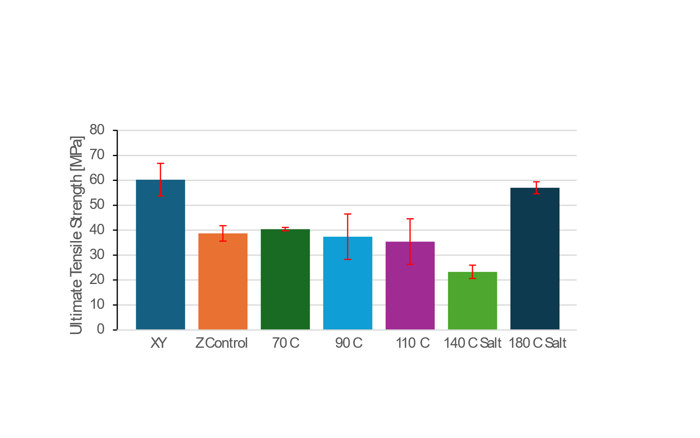
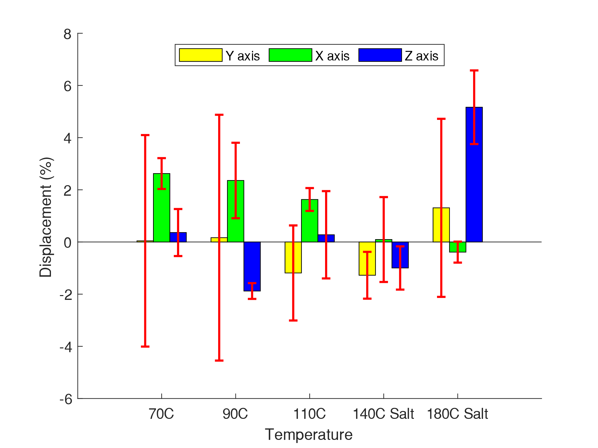

Project 10 · Mechops E15
Enhancing PLA Strength: Exploring the Power of Salt Remelting
Mechanical Operations Lab (E15) · University of Southern California · 2024
Course
Mechops Lab — E15
Partners
Henry Glover & Aidan Janowitz
Material
PLA — 100% infill, 0.2 mm layers
Equipment
Chemistry Furnace, Breaker Bridge, Load Cell
Analysis
Tensile Strength + Dimensional Deflection
Contents
Background & Motivation
Fused Deposition Modeling (FDM) 3D printing has become widely accessible — the Creality Ender 3 can be purchased for under $90 — but all FDM parts share a fundamental structural weakness: Z-axis anisotropy. Because each layer is deposited on top of the previous one, inter-layer bonding relies on thermal fusion during printing. When the nozzle moves to a new layer, the previous layer has already cooled, leaving partially fused interfaces. The result is that Z-direction tensile strength is significantly lower than XY-direction strength, limiting FDM parts in load-bearing applications.
This experiment evaluated two post-processing strategies to close that gap: oven annealing (heating parts to 70, 90, or 110 °C — near but below the 60–65 °C glass transition temperature of PLA) and salt remelting (packing parts in fine-grain salt and heating to 140 or 180 °C, just past PLA's ~175 °C melt temperature). The salt bath provides uniform heat transfer while supporting the part externally to prevent gross deformation during melting.



FDM printer and dog-bone specimens printed at 100% infill, 0.2 mm layers, 240 °C nozzle, 55 °C bed
Methods & Materials
Dog-bone specimens were printed in PLA at 100% infill with consistent parameters: 0.2 mm layer height, 240 °C nozzle, 55 °C bed, 6 mm³/s flow rate. Specimens were printed in two orientations — flat (XY) and on-edge (Z) — to establish baseline anisotropy. Post-processing treatments included:
Oven annealing: specimens placed in a chemistry furnace preheated to 70 °C, 90 °C, or 110 °C for one hour — targeting temperatures near PLA's glass transition zone (60–65 °C) to promote chain mobility without full melting.
Salt remelting: specimens packed in fine-grain salt inside a container, then heated in the chemistry furnace until an internal temperature of 140 °C or 180 °C was reached (measured with a food thermometer). At 180 °C — above PLA's ~175 °C melt temperature — the polymer fully re-fuses across layer boundaries. Fine-grain salt was chosen over coarse grain to improve dimensional accuracy of the finished surface.
Tensile testing was performed on a custom breaker bridge equipped with a load cell. The load cell uses a strain gauge whose resistance changes under deformation (R = ρL/A); the change is amplified via a Wheatstone bridge and op-amp circuit and converted to a force value (F = mg). Tensile strength was then calculated as σ = F/A, where A is the cross-sectional area of the dog-bone neck. Dimensional change (warping/deflection) was measured with calipers and a micrometer across all three axes.



Breaker bridge setup · Force-displacement curve at breakage · ΔX/ΔY/ΔZ dimensional measurement scheme
Results — Ultimate Tensile Strength
The UTS bar chart tells the key story of this experiment. The XY-printed control sets the upper bound at ~60 MPa — the best achievable strength with conventional FDM. The Z-direction control (unmodified, layer-by-layer) drops to ~39 MPa, confirming the well-known anisotropy problem.
Oven annealing at 70–110 °C produced modest or no improvement — the 70 °C sample reached ~40 MPa while 90 °C and 110 °C actually trended downward toward ~37 and ~35 MPa respectively. These temperatures are insufficient to fully re-fuse layer interfaces; instead, excessive heat near the glass transition causes some chain disordering without true bonding.
Salt remelting at 140 °C performed worst overall at ~23 MPa. This temperature sits between glass transition and full melt — causing deformation and partial softening without complete inter-layer fusion. Salt remelting at 180 °C, however, achieved 58 ± 2 MPa — nearly matching the XY baseline. At this temperature, PLA fully melts and re-solidifies as a continuous isotropic mass, with layer lines completely eliminated in post-fracture inspection.

UTS across all 7 conditions — 180 °C salt remelting matches the XY baseline, closing the Z-axis strength gap
Results — Dimensional Analysis
A key concern with any high-temperature post-process is dimensional distortion. Warping, shrinkage, and residual stresses from uneven cooling can render a part dimensionally inaccurate even if its strength improves. Deflection was measured along all three axes (X, Y, Z) as a percentage change from the as-printed dimensions.
Oven-annealed samples at 70–110 °C show modest X and Y expansion (up to ~2.5%) likely from mild thermal relaxation, with Z remaining near zero. The 180 °C salt sample shows the largest Z-axis displacement (~+5%) — the material fully melted and re-solidified under its own weight and the salt pressure, causing measurable but bounded growth in the Z direction. However, because fine-grain salt was used and the part was fully supported on all sides, X and Y dimensions remained near zero change — demonstrating that the salt bath effectively constrains lateral deformation during melting.
The conclusion is that 180 °C salt remelting is viable for isotropic parts, provided the print is at 100% infill (air gaps cause cavitation during melting) and extruder flow rate is tuned slightly higher to eliminate internal voids.

X/Y/Z dimensional displacement (%) vs. treatment temperature — fine-grain salt constrains X/Y while Z grows ~5% at 180 °C
Discussion & Conclusions
The experiment confirmed that salt remelting at 180 °C is the only tested method that effectively closes the Z-axis strength gap in FDM-printed PLA. Oven annealing below the melt temperature does not achieve inter-layer fusion and offers no consistent strength improvement. Salt annealing at 140 °C is counterproductive, sitting in a destructive transition zone.
Two defects were observed in the 180 °C samples: surface cavities caused by internal air pockets expanding and popping as the part melted, and warping from residual stresses and uneven cooling. Both can be mitigated: cavities by increasing extruder flow rate to eliminate air gaps; warping by controlling cooling rate and salt grain size. Real-world application of this technique could enable FDM parts with truly isotropic mechanical properties — useful for structural components currently limited by Z-axis weakness.
Downloads
Enhancing PLA Strength — Full Presentation (PDF)
15-slide deck · Background, methods, tensile results, dimensional analysis, discussion · Glover & Janowitz
Enhancing PLA Strength — Presentation (PowerPoint)
Original editable slide deck · Mechops E15 · University of Southern California
Annealing Data Analysis (Excel)
Raw tensile force data, UTS calculations, dimensional measurements, uncertainty analysis — all conditions